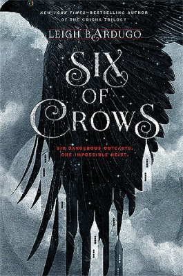

Esta es una duolgia de libros que va en conjunto con una saga de libros pertenecientes a Leigh Bardugo
Leigh Berdugo es una escritora israelí de fantasia juvenil y particularmente conocida sus novelas pertenecientes al Grishaverse.
Si bien tiene otra saga de libros, la cual es la principal del Grishaverse, nosotros hablaremos de una de las duologias
alternativas de estos libros.
Este universo esta inspirado en diversas culturas y esta formado por estos países
Ravka
Su capital es Os Alta, sede del imperio gobernado por el Rey Piotr (Alexander en los libros). Tiene a su cargo dos regimientos:
el primer ejército y el segundo ejército (formado por grisha). Con la formación de la Sombra (Nocéano), su principal ciudad portuaria,
Os Kervo, quedó separada de la capital del reino. Está inspirada en la rusa zarista imperial del siglo XIX.
Ferja
País al norte de Ravka enfrentado con éste al percibir a los grisha como peligrosos. Es por ello que entrena a los drüskelle,
cazadores y asesinos de grisha. Basada en los paises escandinavos, tiene un clima invernal y su gente
es de piel pálida, ojos azules y pelo rubio.
Shu Han
País al sur de Ravka destacado por su avanzada tecnología y ciencia a través del inhumano uso de los grisha.
Está inspirado en Mongolia y China. Su pueblo tiene el cabello liso oscuro y ojos dorados.
Kerch
Nación insular localizada en el mar auténtico conectada al este con Shu Han por puentes de tierra.
Está inspirada en la república de los Siete Países Bajos del siglo XVIII con influencias del Londres victoriano o Nueva York.
Su capital es Ketterdarm, centro del comercio mundial y también del crimen organizado de los bajos fondos. Es aqui en donde se desarrolla
la bilogía de Seis de Cuervos.
Novji Zem
País situado al otro lado del mar auténtico, conocido por su población de piel oscura, sus armas de fuego y el cultivo de la droga jurda.
La historia sigue una narrativa líneal con los puntos de vista de todos los personajes, es facil de seguir el paso y nos permite enterarnos
de toda la historia sin que nos veamos influenciados con la personalidad de cada uno de ellos.
Cada uno de ellos cuenta con una personalidad unica que nos permite encariñarnos un poco, desde el sarcasmo sinico de Kas Bekker
a los comentarios joviales de Jasper Fahey. Pero para eso hablaremos un poco de cada un de ellos.
Kas Bekker es el lider de los inadaptados. Crecido en las calles de Ketterdarm a las malas, provoco que desarrollara una fuerte
fobia al contacto fisico. Es un joven de 17 años que no teme lastimar a los demas para conseguir sus objetivos
pese a esto a lo largo de la serie podemos precensiar como su personalidad ruda se va hablandando por sus demas compañeros. No es como que podamos precensiar
esto de primera mano, sin embargo ahi esta su marchito corazon.
Inej Gafta o tambien llamada el especto, una acrobata Suli tomada del manto de su madre y vendida a la casa de las fieras, comprada por Kas con la mitad de sus poseciones,
Es una mujer agil que trepa las paredes como una araña, al principio parecia que no tenia ideas aparte de las de Kas, sin embargo a lo largo del libro podemos
apreciar como su personalidad se va afianzando a su propia persona.
Jasper, con el terminamos nuestro trio principal, tambien perteneciente al grupo de inadaptados de Kas, Jasper es el tirador estrella del equipo. Abandonando la universidad
debido a que perdio todas sus poseciones debido a deudas de juego que parecen no terminarse jamas en los bares de Ketterdarm. Al principio crei que era el alivio cómico del equipo,
pero lo podemos observar teniendo conversaciones bastantes profundas con cada uno de los demas personajes.
Nina es una Grisha Cardio proveniente del imperio Ravkano, pertenecio al ejercito hasta que fue capturada por Mathias y tomada prisionera, llegando a Ketterdarm despues de haber llegado a
una tregua con su carcelero y quedandose ahí despues de provocar que encarcelaran a Mathias despues de acusarlo de ser un esclavista.
Mathias era un guerrero Ferjano, tomo prisionera a Nina y mientras se dirigian en barco a Ferja para que ella fuera a juicio dicho barco se hundio quedando solo ellos dos como sobrevivientes.
Formaron una pequeña amistad durante su viaje hasta Ketterdarm, en donde creyo haber sido traicionado por ella despues de que lo acusara con las autoridades de ser esclavista. Fue llevado a las "Puertas del infierno",
lugar en el que estuvo por un par de años antes de que Nina y Kas fueran a rescatarlo para que los ayudara a infiltrarse en Ferja.
Wyllan es la ultima adquisición de los cuervos, un quimico que de quimico no tiene nada, tiene un pensamiento inteligente y es un chico
sumamente brillante, con algunas carencias, hijo de uno de los principales comerciantes de Kerch, decidio uir de casa despuesde que
su padre se volviera a casar, llegando así, a ser uno de los protegidos de Kass al enterarse de donde venia.
La historia comienza despues de que descubren que un nuevo cargamento de Jurda comienza a circular por las calles de Ketterdam, esta es una droga especial que parece afectar principalmente a los Grisha.
Esta droga es adictiva desde la primera vez que se consume y su principal efecto es en los poderes y habilidades de cada Grisha, la llamada pequeña ciencia es convertida en magia sin distinción, pues, sus habilidades
rompen todas las leyes aparentes de la fisica desde la primera toma.
Nuestros protagonistas aparecen despues de ser contratados para secuestrar al creador de esta droga, sin embargo no es tan facil, pues dicha persona se encuentra encarcelado en una carcel ferjana,
lugar que no es de tan facil acceso.